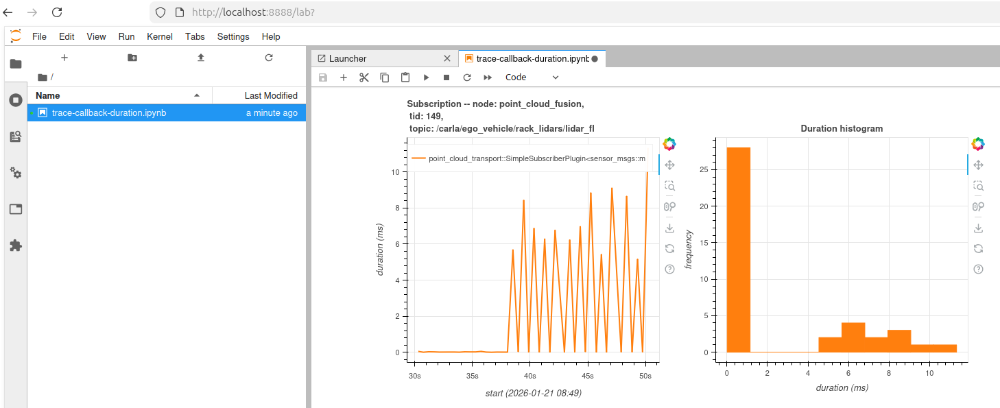
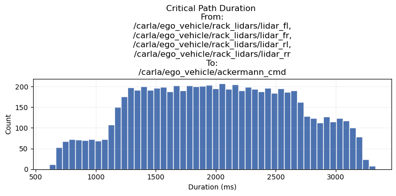
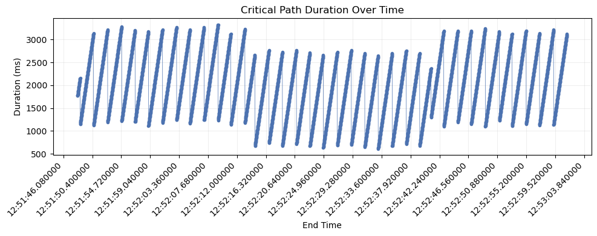
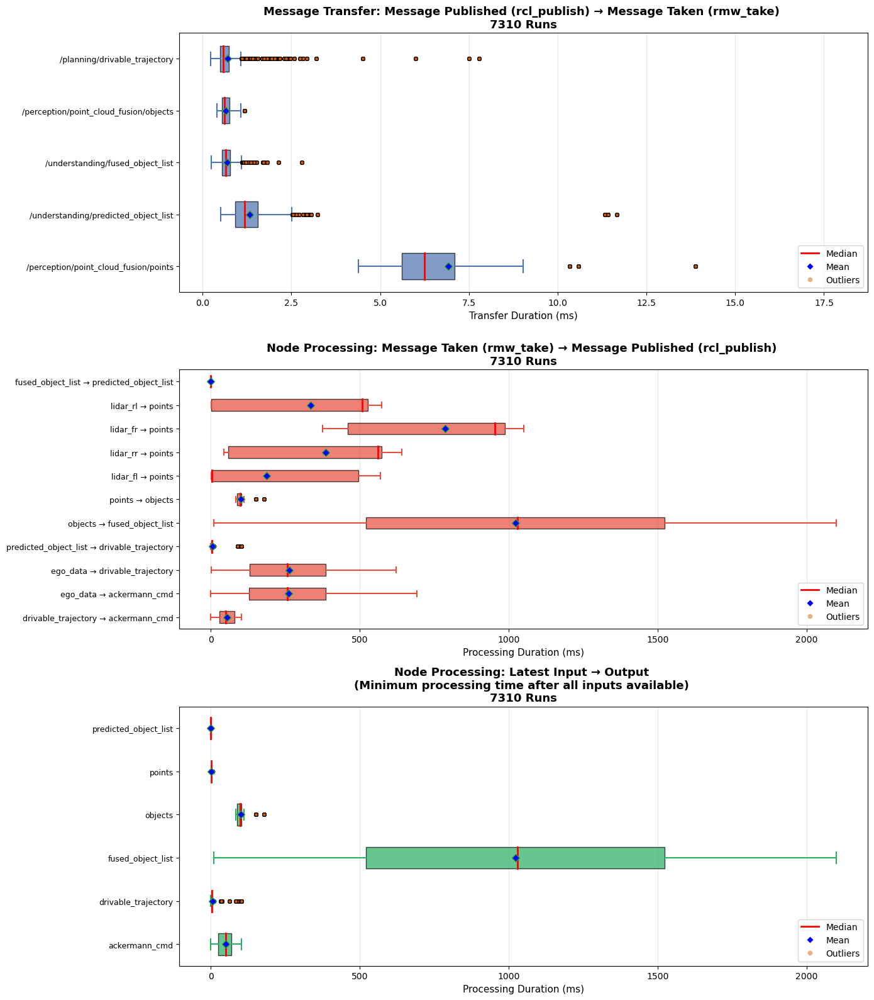
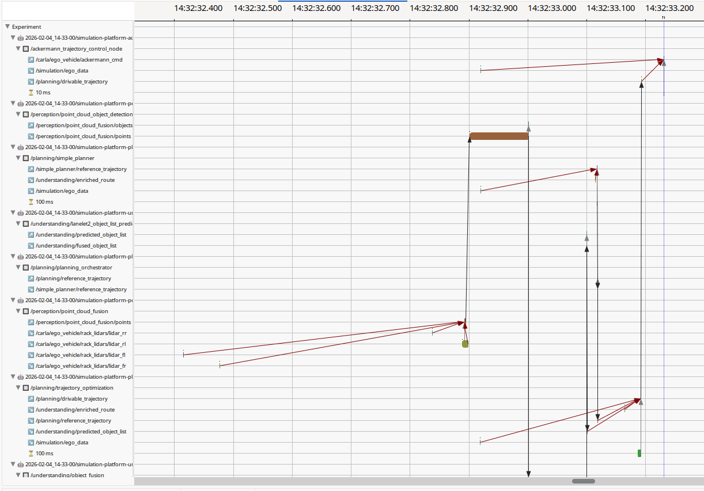

ROS 2 Trace Analysis with Jupyter Notebooks and Eclipse Trace Compass
This repository contains tools for analyzing ROS 2 execution traces to understand system performance and timing behavior.
The provided Docker image allows statistical data analysis using Jupyter notebooks and graphical inspection using Eclipse Trace Compass.
🚀 Quick Start • 💻 Development • 📝 Documentation
- Important
- This repository is part of OpenADS, the Open Automated Driving Systems project. OpenADS and its modules have been initiated and are currently being maintained by the Institute for Automotive Engineering (ika) at RWTH Aachen University.
🚀 Quick Start
ROS 2 trace data can be captured, e.g. from modules running on the critical path in OpenADStack. The recorded traces can be analyzed with containerized tools provided in this repository.
See 📝 Documentation for more information on how traces can be analyzed.
💻 Development
Set up Development Environment
- Clone the repository. git clone https://github.com/openads-project/ros2-trace-analysis.git
- Initialize the
.openads-dev-environmentsubmodule containing development environment configuration.cd ros2-trace-analysisgit submodule update --init --recursive
- Open the repository in Visual Studio Code. code .
- Install the recommended VS Code extensions.
Ctrl+Shift+P / Extensions: Show Recommended Extensions / Install Workspace Recommended Extensions (Cloud Download Icon)
- Reopen the repository in a Dev Container. Ctrl+Shift+P / Dev Containers: Rebuild and Reopen in Container
Build
Ctrl+Shift+B
📝 Documentation
ROS 2 traces can be statistically analyzed using the provided Jupyter Notebooks or graphically using Eclipse Trace Compass.
Jupyter Notebooks
- Connect to the JupyterLab server with your browser. The URL is shown in the container log, usually http://localhost:8888.
- Set the
trace_dirvariable in the first cell to your trace directory - Run all cells to generate the visualizations
- Analyze the plots
Trace Callback Durations
The trace-callback-duration.ipynb notebook provides visualization and analysis of ROS 2 callback durations from trace data. It:
- Loads trace data from a specified path
- Uses tracetools_analysis to process ROS 2 tracing events
- Generates interactive visualizations using Bokeh showing:
- Time series plots: Callback duration over time for each callback
- Histograms: Distribution of callback durations
- Combined view: All callback durations plotted together for comparison
This helps identify performance bottlenecks, timing anomalies, and callback behavior patterns in ROS 2 applications.

Trace Critical Path Durations
The trace-critical-path.ipynb notebook analyzes the critical path of ROS 2 message flows through callback chains. It:
- Loads trace data from a specified path
- Uses tracetools_analysis to process ROS 2 tracing events
- Identifies message flow paths from a specified end topic to specified begin topics
- Calculates end-to-end latencies across callback chains
- Generates visualizations showing:
- Critical path durations: Histogram showing duration distribution and graph showing path duration over time
- Message Transfer Durations: Boxplots showing the duration between a message being published and the same message being taken by a following node (per topic)
- Message Processing Durations: Boxplots showing the duration between a message being taken by a node and the resulting message being published based on the input(s) (per topic).
 |  |  |
Eclipse Trace Compass
Eclipse Trace Compass is an open-source trace visualization and analysis tool that provides powerful features for understanding system behavior through trace data.

Using with ROS 2 Traces
ROS 2 uses LTTng (Linux Trace Toolkit: next generation) for tracing. Eclipse Trace Compass can directly import and visualize these traces:
- Select
File-->Import ...--> Select root directory:/trace--> Check the corresponding timestamped folders per container in the list -->Finish - Expand
Tracingin the Project Explorer --> Right-Click onTracesin the Project Explorer -->Open As Experiment-->ROS 2 Experiment (Incubator) - Expand
Experimentsin the Project Explorer -->Experiment-->Views-->ROS 2 Messages--> Right click onMessages (incubator)-->Open - Inspect the message flow, hold CTRL and scroll to zoom in, hold Shift to scroll left/right. Click on one of the bars in the message flow to follow, then click the Follow this element button above the graph to analyze the message flow.
- Expand
Experimentsin the Project Explorer -->Experiment-->Views-->ROS 2 Message Flow--> Right click onMessage Flow (incubator)-->Open - You should see the message flow.
Tips
- Keep trace windows short to reduce file size.
- Restart the ROS stack before capturing a new trace session to make sure that initialization data is captured, which is required for visualization in Eclipse Trace Compass.
- Make sure that traced ROS nodes are started as
dockeruser. Otherwise, make sure that Eclipse Trace Compass has file permissions to read the trace data.
⚖️ Licensing
The source code in this repository is licensed under Apache-2.0, see [LICENSE](LICENSE). Container images provided by this repository may contain third-party software shipped with their own license terms.
🙏 Acknowledgements
Development and maintenance of this repository are supported by the following projects. We acknowledge the funding of the respective institutions.
| Project | Funding Institution | Grant Number |
|---|---|---|
| autotech.agil | 🇩🇪 Federal Ministry for Research, Technology and Space (BMFTR) | 01IS22088A |